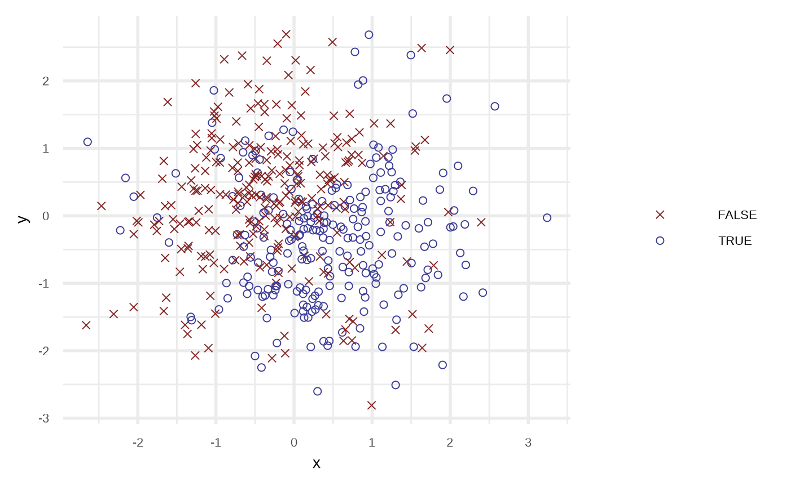
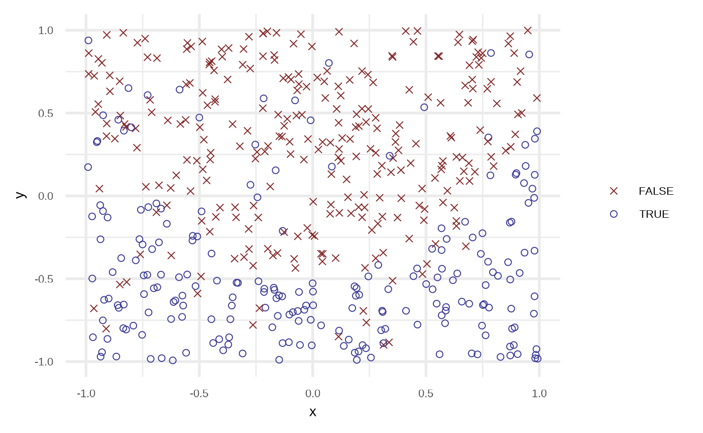
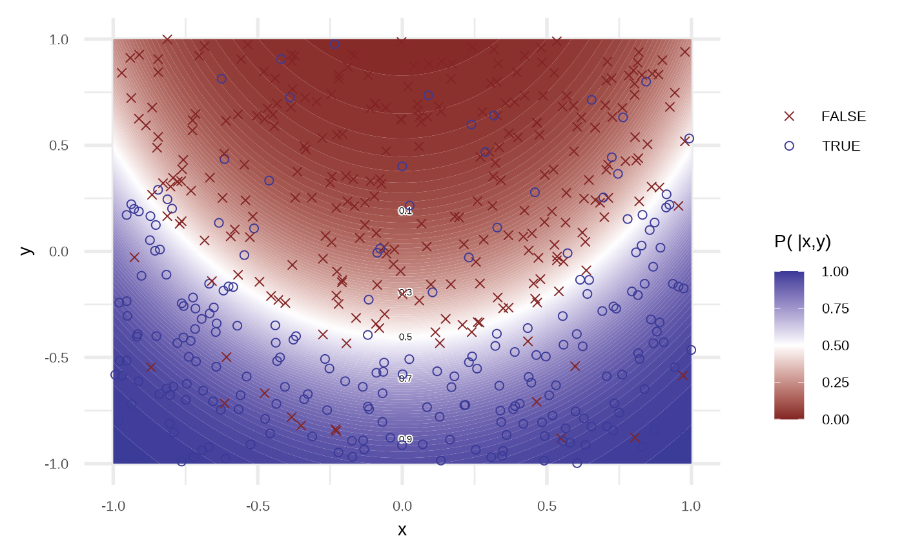

Binary classification
Source:vignettes/articles/Binary-classification.Rmd
Binary-classification.RmdGenerating data set
The main function is sim_response_xy, you need to define:
- A number of observations to simulate.
- Distributions to sample \(x\) and \(y\). For example
purrr::partial(runif, min = -1, max = 1). - A gunction to define the relation between the reponse and the \(x\) and \(y\), for example
function(x, y) x > yThis function must return a logical value. - A number to define the noise in the generated data.
library(klassets)
set.seed(123)
df <- sim_response_xy(n = 500)
df
#> # A tibble: 500 × 3
#> response x y
#> <lgl> <dbl> <dbl>
#> 1 FALSE -0.560 -0.602
#> 2 FALSE -0.230 -0.994
#> 3 FALSE 1.56 1.03
#> 4 FALSE 0.0705 0.751
#> 5 TRUE 0.129 -1.51
#> 6 TRUE 1.72 -0.0951
#> 7 TRUE 0.461 -0.896
#> 8 FALSE -1.27 -2.07
#> 9 TRUE -0.687 0.150
#> 10 FALSE -0.446 -0.0792
#> # … with 490 more rows
plot(df)
df2 <- sim_response_xy(
n = 500,
x_dist = purrr::partial(runif, min = -1, max = 1),
relationship = function(x, y) x**2 - 0.5 > y,
noise = 0.1
)
plot(df2)
Apply classification algorithms
Logistic Regression
df2_lr <- apply_logistic_regression(df2, order = 3, stepwise = TRUE)
df2_lr
#> # A tibble: 500 × 4
#> response x y prediction
#> <lgl> <dbl> <dbl> <dbl>
#> 1 TRUE 0.707 -0.588 0.913
#> 2 FALSE 0.332 0.885 0.0244
#> 3 FALSE 0.467 -0.241 0.505
#> 4 FALSE -0.371 0.252 0.123
#> 5 TRUE 0.335 -0.633 0.795
#> 6 FALSE -0.0722 0.318 0.0707
#> 7 FALSE 0.301 0.469 0.0603
#> 8 TRUE 0.572 -0.00864 0.375
#> 9 FALSE 0.803 0.737 0.153
#> 10 FALSE 0.0548 0.664 0.0287
#> # … with 490 more rows
plot(df2_lr)